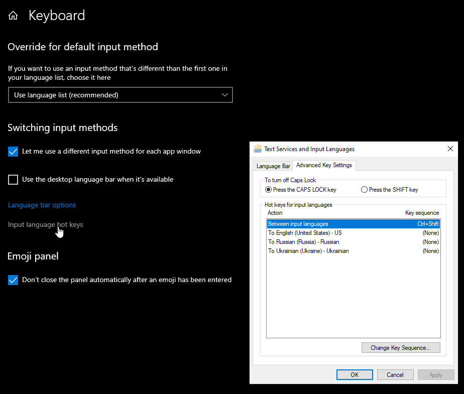

This software is made to allow change of language with direct shortcut (e.g. Ctrl-1 for English, Ctrl-2 for Polish) in Windows.
Windows does have system dialog to set language shortcuts:

Over the years and many windows version (windows 7, 10) multiple updates to windows 10 this option had proven to be unstable (while sequence shortcut usually Ctrl-Shift works fine direct shortcuts after several reboots stop working and have to be entered again). Hence this application.
Application does not change cycling through languages via standart (usually Ctrl-Shift).
This is a simple application. Download zip file from the releases section of github and unzip it somewhere on your computer.
Edit supplied sample languages.conf file (for options see comments in the file).
Keyboard languages does not need to be installed separately if they are not available - application will load those via Windows API.
If you wish for application to start during windows startup automatically, the right press on the application language.
In case application (language) icon is hidden you can force it to be visible all the time (see - how to show icon)
Shortcut can be a combination of ctrl, alt, win and shift modifiers and a single key (this is limitation of windows API, so cannot be changed). Application will be developed to accept multiple keys).
For list of virtual keys see Windows virtual codes. For
For list of supported keyboard layouts see Windows keyboard layouts codes
This is not a stable application. It will not harm your computer, but possible bugs may require restart of the application.
Only windows (tested on Windows 10) OS is supported. No plans for other operating systems. Although the application is in free pascal (which is cross platform), application relies heavily on OS specific keyboard APIs, which I believe would be hard to port for other OSes.
For questions/bug reports, please go to discord channel for this application.